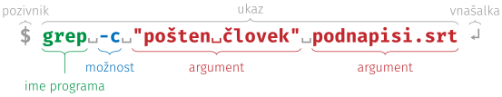

Ukazna vrstica#
Programska oprema
Datoteke in imeniki#
Vsi podatki na računalniku so shranjeni v datotekah (angl. files), poimenovanih kosih podatkov, kot so slike, besedila, zvočni posnetki ali programi. Organiziramo jih tako kot liste papirja v kartonskih mapah: razporedimo jih po imenikih (angl. directories ali folders), ki lahko poleg datotek vsebujejo tudi druge imenike.
Ime datoteke ima dva dela: pred zadnjo piko je ime, za njo pa končnica, na primer .jpg v pocitnice.jpg ali .docx v esej-na-maturi.docx.
Po končnici operacijski sistem ve, s katerim programom naj datoteko odpre;
če jo spremenite, se datoteka pogosto ne odpre več.
Današnji operacijski sistemi končnic ponavadi ne prikazujejo, zato vklopite prikazovanje končnic in skritih datotek.
Isto vrsto podatkov lahko shranimo na več načinov in vsak ima ponavadi svojo končnico. Nekaj pogostih:
Slike |
Dokumenti |
Zvok |
Video |
Ostalo |
|---|---|---|---|---|
|
|
|
|
|
|
|
|
|
|
|
|
|
|
|
|
|
|
|
|
|
|
|
|
|
|
|
|
Datoteke in imenike na svojem računalniku pregledujete v upravitelju datotek: v sistemu Windows je to Raziskovalec (angl. File Explorer), na macOS pa Finder. Vse, kar je vaše, je v vašem domačem imeniku (angl. home directory), skupaj z imeniki, kot so Desktop, Documents in Downloads, ki jih je ustvaril operacijski sistem. V učbeniku predpostavljamo angleška privzeta imena, kakršna so na računalnikih v učilnici; če so na vašem računalniku drugačna, uporabite svoja. Pozor: v sistemu Windows v slovenščini jih Raziskovalec le prikazuje kot Namizje, Dokumenti in Prenosi, v ukazni vrstici pa so še vedno angleška. Upravitelj datotek lahko vsebino imenika pokaže kot mrežo ikon ali kot seznam. Seznam je uporabnejši: pri vsaki datoteki vidite tudi vrsto, velikost in datum zadnje spremembe, s klikom na naslov stolpca pa seznam po tem stolpcu uredite. Na macOS se ta pogled imenuje List, v sistemu Windows Details. Kadar datoteko preimenujete, upravitelj izbere samo ime brez končnice, da je po nesreči ne spremenite.
Umetna inteligenca, ki dela z vašimi datotekami, se po njih znajde enako kot vi: po imenih datotek in imenikov. Pospravljene datoteke s smiselnimi imeni ji torej pomagajo prav toliko kot vam. Datoteke pospravljate tako, da ustvarite imenike (Ctrl+Shift+N, 🍎 Cmd+Shift+N) in datoteke vanje premaknete. Lažje gre z dvema oknoma: imenik odprite v novem zavihku in zavihek odvlecite v svoje okno. Več datotek izberete hkrati: s pritisnjeno tipko Ctrl (🍎 Cmd) dodajate posamezne datoteke, s Shift pa izberete vse med dvema. Isti tipki delujeta tudi pri izbiranju besed v urejevalniku ali celic v preglednici. Datoteko lahko namesto premika tudi kopirate. Kopiranje velikih datotek lahko traja dlje, premik znotraj istega diska pa se zgodi v trenutku: datoteka se v resnici ne premakne, spremeni se le zapis o tem, v katerem imeniku je.
Imenik lahko vsebuje druge imenike, ti spet svoje, in tako naprej. To strukturo si lahko predstavljamo kot podrto drevo, kot na Fig. 4: korenski imenik, ki vsebuje vse druge, je skrajno levo, vsak imenik je zamaknjen pod tistega, v katerem je, datoteke pa so listi na koncih vej. Pot (angl. path) do datoteke našteje imenike od korena do nje.
Opomba
Imena imenikov in datotek v poti ločujejo poševnice: v ukazni vrstici poševnica /, tudi v Git Bash v sistemu Windows, v Raziskovalcu pa leva poševnica \.

Fig. 4 Domači imenik z imeniki iz 1. poglavja in pot do datoteke README.md#
Več datotek lahko stisnemo v eno samo, arhiv (angl. archive),
ki ga prepoznamo po končnicah .zip, .rar, .7z, .tar ali .gz in po ikoni z zadrgo.
Windows vsebino arhiva pokaže, kot da bi bil navaden imenik, a to je le videz:
za (skoraj) vsa opravila pri tem predmetu je treba arhiv najprej odpakirati.
Ukazi#
Ukazna vrstica je uporabniški vmesnik, ki so ga največ uporabljali v bakreni dobi računalništva, naprednejšim uporabnikom računalnika pa še vedno pride prav. Če še niste med njimi, boste do konca študija prav gotovo tudi vi.
Ukazi v ukazni vrstici so programi.
Besede za imenom programa so njegovi argumenti: podatki, ki jih program potrebuje za izvedbo svoje naloge.
Argument, ki se začne z -, je možnost: ne pove, s čim naj program dela, ampak kako.
Program cd (kratko za angl. change directory) uporabimo z enim argumentom, potjo do imenika, v katerega se hočemo prestaviti,
program pwd (kratko za angl. print working directory) pa argumentov ne potrebuje.

Fig. 5 Sestavni deli ukaza v ukazni vrstici#
Dele ukaza ločijo presledki, zato ime s presledki postavimo med narekovaje:
brez njih bi cd Vhodna dvorana pomenilo premik v imenik Vhodna z odvečnim argumentom dvorana.
Ukazi imajo lahko še druge dele, a te bomo spoznavali sproti, ko jih bomo potrebovali.
Ukazno vrstico boste uporabljali kar v urejevalniku VSCode: odprete jo z ukazom Terminal > New Terminal, pokaže pa se v podoknu (angl. Panel) na dnu okna.
Začne v imeniku, ki ga imate odprtega v urejevalniku, zato imenik, v katerem želite delati, najprej odprite v VSCode (File > Open Folder).
V sistemu Windows preverite, da v podoknu desno zgoraj piše bash in ne powershell; če ne, kliknite puščico ob gumbu + in izberite Git Bash.
Da vam tega ne bo treba ponavljati, nastavite Git Bash za privzeto ukazno vrstico.
Ukazno vrstico lahko odprete tudi brez urejevalnika, naravnost iz upravitelja datotek.
Najpogostejše ukaze smo zbrali v plonkcu za ukazno vrstico. Nekaj primerov:
pwd # izpiše pot do trenutnega delovnega imenika
ls # izpiše vsebino trenutnega delovnega imenika
cd rp # premakne nas v podimenik rp
cd racunalniski-praktikum # in še en imenik globlje
cat README.md # izpiše vsebino datoteke README.md
cd .. # premakne nas en imenik višje, nazaj v rp
cd ~ # premakne nas v domači imenik, od koderkoli
cd rp/racunalniski-praktikum # po poti se premaknemo za več imenikov naenkrat
Regularni izrazi#
Regularni izrazi (angl. regular expressions ali kratko regex) so zaporedja znakov, s katerimi opišemo vzorce v navadnem besedilu.
Najpreprostejši regularni izraz je natančno ujemanje, ki ste ga gotovo že kdaj uporabili: vse pojavitve besede kuža poiščemo z regularnim izrazom kuža.
Kaj pa če želite poiskati vse številke v besedilu?
To naredimo z regularnim izrazom \d+: \d je vzorec, ki predstavlja eno (katerokoli) števko, + pa pomeni eno ali več ponovitev tistega, kar piše pred njim.
Z nekaj dodatnimi znaki opišemo bolj zapletene vzorce: en znak iz nabora, ponovitve, izbiro med možnostmi in skupine.
Vzorec |
Pomen |
Primer |
|---|---|---|
|
en poljuben znak |
|
|
en znak izmed naštetih |
|
|
ena ali več ponovitev |
|
|
nič ali več ponovitev |
|
|
nič ali ena ponovitev (neobvezen del) |
|
|
izbira |
|
|
skupina |
|
Ponovitev in izbira veljata za en znak ali za skupino v okroglih oklepajih. Oklepaji hkrati označijo skupino (angl. capture group): del besedila, ki se ujema z vsebino oklepajev, si iskalnik zapomni, zato se nanj lahko sklicujemo.
Regularne izraze boste uporabljali na dveh mestih.
V urejevalniku VSCode jih vklopite z ikono .* v iskalnem polju (Ctrl+F, 🍎 Cmd+F) ali v polju za zamenjavo (Ctrl+H, 🍎 Cmd+Option+F).
Pri zamenjavi $1 pomeni prvo skupino, $2 drugo in tako naprej:
z iskanjem (\d+),(\d+) in zamenjavo $1.$2 bi v vseh časih v podnapisih decimalno vejico zamenjali s piko.
V ukazni vrstici z regularnimi izrazi iščemo z ukazom grep, ki izpiše vrstice, v katerih se vzorec ujema — na primer v podnapisih iz 3. naloge, ko jih shranite v UTF-8:
grep -E "Grozd|Gornik" podnapisi.srt # vrstice, v katerih nastopa Grozd ali Gornik
grep -c -E "Grozd|Gornik" podnapisi.srt # samo število takih vrstic
Regularni izrazi obstajajo v več različicah, ki se razlikujejo v podrobnostih.
Nekatere na primer nimajo posebnega vzorca za števke, zato jih je treba opisati z [0-9]; grep pozna izbiro | in skupine šele z možnostjo -E (angl. extended).
Tu smo opisali le majhen del; kar boste še potrebovali, boste našli sami.
1. naloga: škrati#
Glavni namen te naloge je, da začnete razvijati boljši občutek za to, kako računalnik deluje v ozadju.
Za hitrejše preklapljanje med oknom z navodili in oknom z ukazno vrstico priporočamo
bližnjico Alt+Tab (🍎 Cmd+Tab).
Tudi sicer bo tipka Tab pri tej nalogi hudo uporabna:
dopolni vam ukaz, kar še posebej pride prav pri dolgih imenih s presledki.
Ne pozabite, da taka imena postavimo med narekovaje: "To je dolgo ime z veliko presledki".
Prenesite arhiv
skrati.zipin ga odpakirajte. Nastali imenikskratipremaknite v imenikrp, ki ste ga naredili na prejšnjih vajah, poleg imenikaracunalniski-praktikum, kot na Fig. 4.V VSCode odprite imenik
rudnik(File > Open Folder) in nato ukazno vrstico (Terminal > New Terminal). Če vas VSCode vpraša, ali avtorjem imenika zaupate (Do you trust the authors?), potrdite, sicer ukazna vrstica ne deluje.Odprite še datoteko
skrati.pdf.Preverite, da ste v pravem imeniku: v ukazno vrstico napišite
pwdin pritisnite vnašalko ↵ (angl. enter ali return). Izpisala se bo nova vrstica. Če na koncu pišerudnik, je vse ok, sicer pa poiščite pomoč.V ukazno vrstico prilepite spodnji ukaz in pritisnite vnašalko ↵.
cd "Vhodna dvorana/Dolgočasna pravokotna dvorana/Radegastov kot/Zahodno križišče"
Naloga je interaktivna zgodba, v kateri boste uporabljali uroke, ki pa so v resnici programi. V zgodbi so navodila in namigi za posamezni odsek podani ležeče. Z branjem nadaljujte šele, ko opravite vse, kar piše. Sedaj lahko sledite navodilom v PDF datoteki. Veliko zabave in pazite na glavo, stropi so nizki!
2. naloga: opisovanje vzorcev z regularnimi izrazi#
Kakih 20 minut rešujte lekcije na spletni strani RegexOne ali RegexLearn, ali pa na obeh. Na gumb Continue vam ni treba klikniti, dovolj je, da pritisnete vnašalko ↵. Če ste regularne izraze že kdaj uporabljali, se lahko preizkusite v regex križanki.
3. naloga: podnapisi#
S spleta ste prenesli podnapise za film, a so nekatere črke napačne.
Prenesite datoteko
podnapisi.srtin jo odprite v urejevalniku VSCode. Datoteke ne urejajte in je še ne shranjujte, sicer se napačne črke shranijo in jih ne boste mogli več popraviti.Poiščite podnapis številka 76. Katere črke so napačne? Če je podnapis videti pravilen, prosite za pomoč.
V statusni vrstici kliknite na kodiranje (tam piše
UTF-8) in izberite Reopen with Encoding. Poiščite kodiranje, pri katerem je podnapis 76 videti takole:Če ste nedolžni nad njim, zakaj se bojite njegovih pisem? — On je bil pošten človek.
Besedilo je slovensko, zato poskusite s srednjeevropskimi kodiranji (angl. Central European). Preverite vse tri šumnike: pri napačnem kodiranju so lahko nekateri pravilni, drugi pa ne.
V statusni vrstici še enkrat kliknite na kodiranje, izberite Save with Encoding in nato
UTF-8.Odprite iskanje (Ctrl+F oz. 🍎 Cmd+F) in vklopite regularne izraze: kliknite na ikono
.*v iskalnem polju ali pritisnite Alt+R (🍎 Cmd+Option+R). Napišite regularni izraz, ki se ujema s časom v podnapisih, na primer z00:00:21,480. Preverite: vsak podnapis ima dva časa, zato mora biti zadetkov dvakrat toliko, kot je podnapisov.Odprite ukazno vrstico (Terminal > New Terminal), se s
cdpremaknite v imenik, kamor ste shranili datoteko, in čase preštejte še z ukazomgrep -cE "⟨vzorec⟩" podnapisi.srt
Z možnostjo
-c(angl. count) ukazu povemo, naj izpiše samo število zadetkov, z možnostjo-E(angl. extended) pa, naj vzorec bere v razširjeni sintaksi, isti, kot jo pozna VSCode. Vzorca\dgrepne pozna, zato števke opišite z[0-9](na macOS\dsicer deluje). Zakaj je število pol manjše kot v urejevalniku?